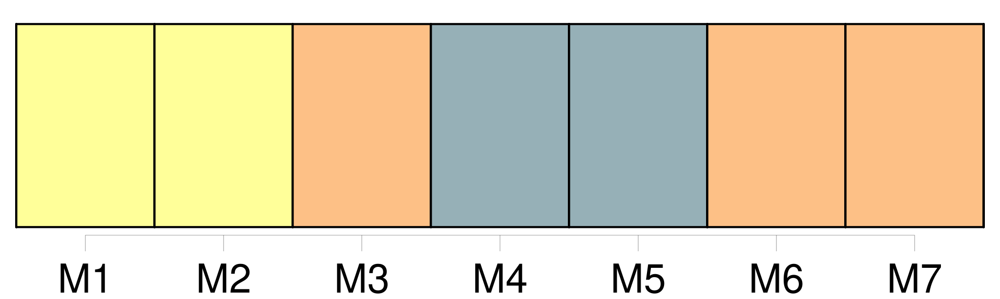

Longueur nb maillons : 11 mentions |
 |
» [8 phrases] [Les dames de Courville] venaient parfois le voir ; et c'étaient pour lui des heures de calme et de bien-être. [Elles] préparaient sa tisane, [avaient] soin du feu, lui [servaient] gentiment son déjeuner, sur le bord du lit ; et quand [elles] partaient il murmurait : « Sacrebleu!! [vous] devriez bien venir loger ici.
» Et [elles] riaient de tout [leur] coeur. [2 phrases] Au moment de prendre congé, alors que [les femmes] l'enveloppaient en un châle, lui [nouaient] un foulard au cou, et qu'il se laissait faire pour la première fois de sa vie, il murmura d'un ton désolé : « Si ça recommence, je suis un homme foutu. |
|
Il est possible de télécharger la ressource sur la page Ortolang |
Si vous avez des questions ou vous voyez des erreurs, merci d'envoyer un mail à silvia.federzoni89@gmail.com |